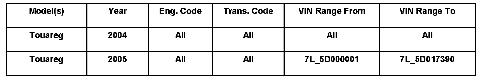
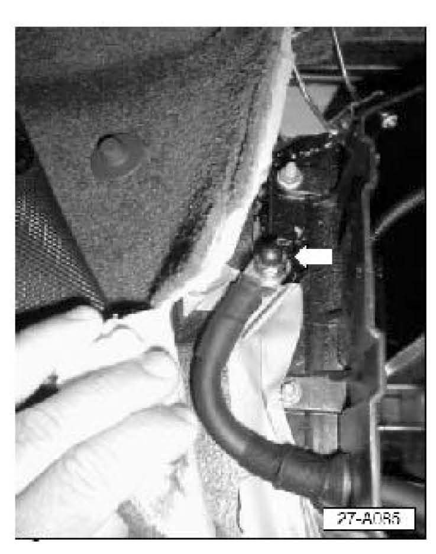
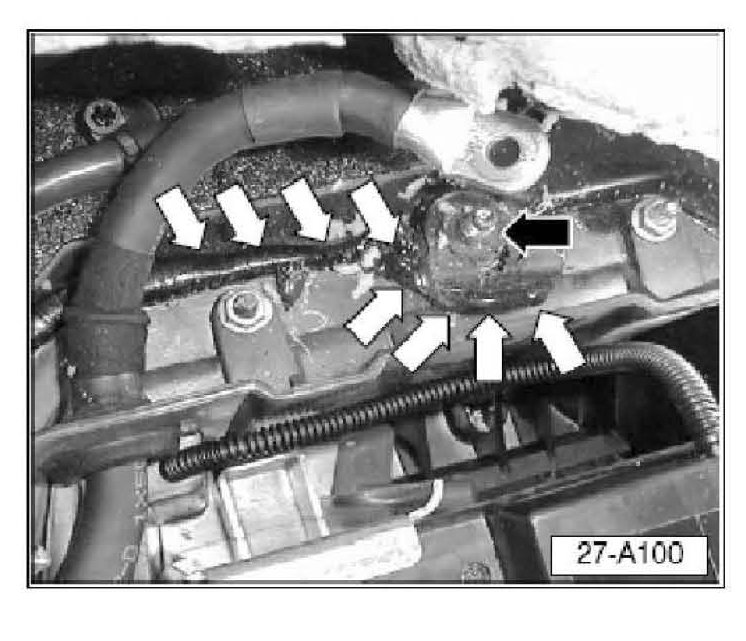
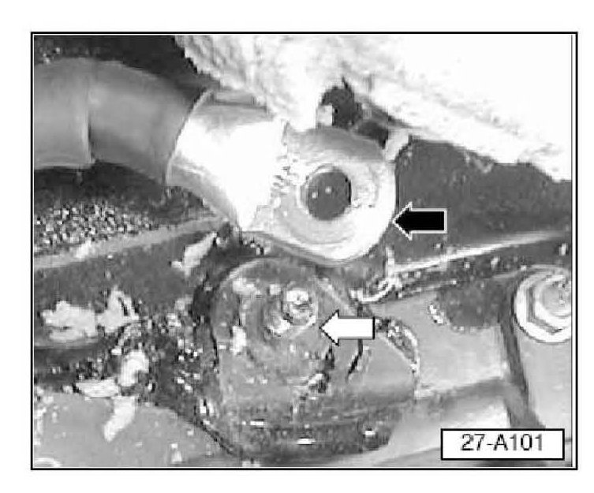
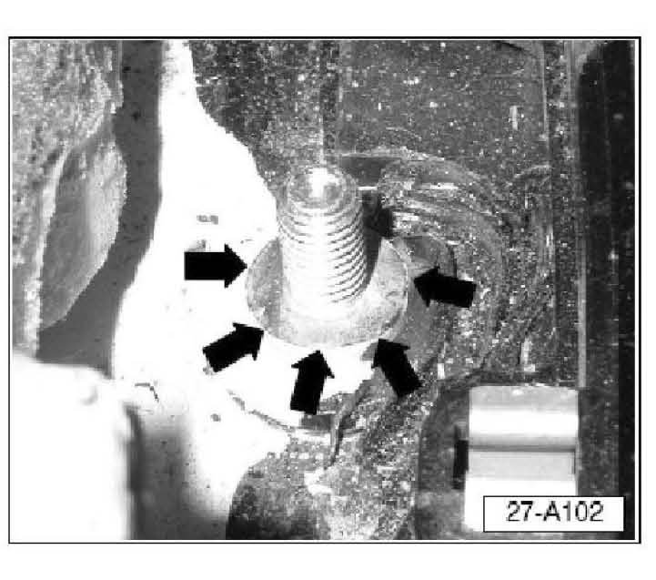
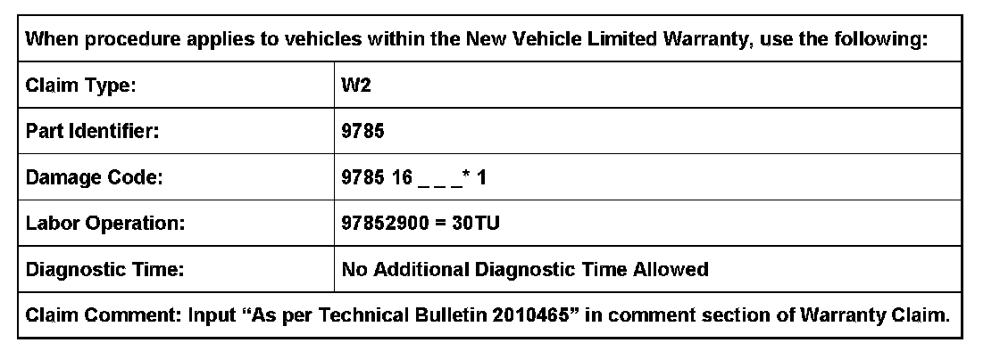
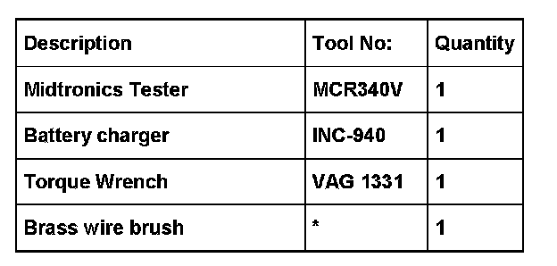

Electrical - No Start/No Crank/Can't Remove Key
27 07 06April 27, 2007
2010465 Supersedes T.B. Group 27 number 05-01 dated January 20, 2005 due inclusion into ElsaWeb.

Affected Vehicles
Condition
Starter, Does Not Crank, Engine Does Not Start; Key Cannot be Removed from Ignition Switch
Vehicle will not crank, does not start, battery has low power condition. Key cannot be removed from ignition switch.
Technical Background
May be caused by low battery voltage due to poor contact at the battery chassis Ground (GND) strap as a result of black silicone like substance (sealant) on the Ground (GND) terminal and Battery Ground (GND) strap.
Production Solution
Beginning with VIN: 7L_5D017391, a protective cap is installed to prevent sealant from reaching stud during the sealing process.
Service

Verify correct DIN values as per Technical Bulletin 2012377.
^ Move driver seat to most rearward and highest position.
^ Remove carpeted cover trim to access Ground (GND) stud.
^ Remove nut (arrow) for battery Ground (GND) strap from chassis Ground (GND) stud.

^ Inspect chassis Ground (GND) stud and strap for black silicone substance.
Tip:
The black silicone substance used to seal the battery box -white arrows- may have been over applied and reached the Ground (GND) stud -black arrow-
If silicone substance is not found:

^ Battery Ground (GND) stud threads and bottom shoulder -white arrow- should be clean and bright.
^ Do Not complete this Technical Bulletin. Diagnose reason for low battery voltage.
If silicone substance is found:
^ Battery Ground stud threads or bottom shoulder -white arrow- are not clean and bright.
^ Clean chassis ground stud and underside of Ground (GND) strap -black arrow- using a brass wire brush.

^ Entire Ground (GND) stud including stud shoulder -arrows- should be clean and bright.
^ Attach battery Ground (GND) strap to stud using nut (previously removed).
^ Nut Torque = 20 Nm (177 in. lbs.) plus/minus 2 Nm (18 in. lbs.).
^ Install carpeted cover trim.
^ Return driver seat to original position.
^ Test battery and charging system using the Midtronics Tester.
^ Charge Battery as necessary using the INC-940 charger as outlined in Technical Bulletin 2012377.
^ Check for DTCs.
^ Clear all DTCs.
Tip:
Steering angle sensor will temporarily lose calibration (light will illuminate) and must relearn it's position.
^ Air suspension will temporarily lose communication with the steering wheel angle sensor (light will illuminate).
^ Perform basic setting in " Guided fault finding" using VAS 5051 / 5052.
Warranty

*Code per warranty vendor code policy.

Required Parts and Tools
No Special Parts required.
Additional Information
All part and service references provided in this Technical Bulletin are subject to change and/or removal. Always check with your Parts Dept. and Repair Manuals for the latest information.